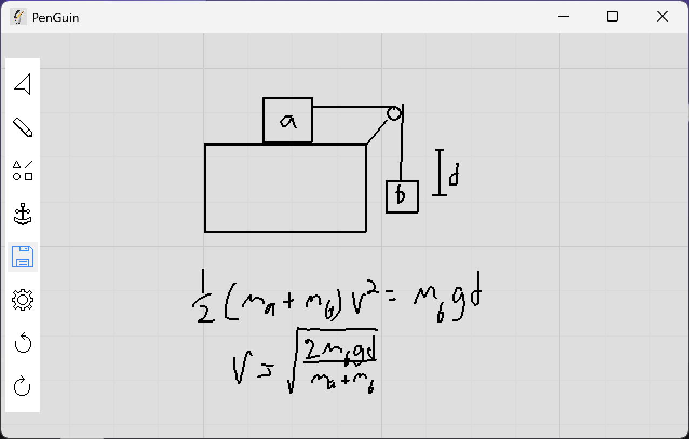

A light weight drawing app designed for STEM notetaking and problem solving.

Most note taking apps are either notebooks with fixed page sizes or whiteboards with one infinite page. PenGuin however offers a notebook structure where each page can be however large you want. This allows the user to structure there ideas or problems by page, but also gives any one page however much space the idea requires. The notes can be exported to a pdf, where each page is dynamically allocated space based on how the limits of the drawing.
The program itself is coded in Python. This allows almost anyone with a little bit of coding knowledge to add custom features. While Python is slow, all computationaly expensive processes are done using libraries that were implemented in C. The graphics are done using Pygame, which offers wrapping functions for the SDL library. All point manipulation is done with Numpy. These dependencies allows PenGuin to be easily modified while also ensuring it has good performance.